Bereitstellung von Anleitungen mit gemischter Realität für Arbeiter in der Produktion
[!include[rename-banner](~/includes/cc-data-platform-banner.md)]Mitarbeiter in Produktionsprozessen profitieren von relevanten Anweisungen, die zum richtigen Zeitpunkt im Rahmen ihrer Arbeit bereitgestellt werden. Anleitungen gelten in verschiedenen Arbeitsbereichen, einschließlich: Montage, Service, Betrieb, Zertifizierung und Sicherheit. In all diesen Kerngeschäftsfunktionen können fortlaufende Schulungsanweisungen dazu beitragen, dass die Mitarbeiter mehr erreichen und besser arbeiten können.
Einführung
Sie können Anweisungen auf verschiedene Arten bereitstellen. Ein effizientes System, das Standardverwendungen liefert Dynamics 365 Guides.
Dynamics 365 Guides kann helfen, Ihre Mitarbeiter durch praktisches Lernen zu befähigen. Sie können standardisierte Prozesse mit schrittweisen Anweisungen definieren, die Ihre Mitarbeiter zu den benötigten Werkzeugen und Teilen führen und den Mitarbeitern zeigen, wie sie diese Werkzeuge in realen Arbeitssituationen einsetzen können.
Sie können Anleitungen zu verschiedenen Aspekten der Produktionssteuerung anhängen, darunter:
- Ressourcen
- Ressourcengruppen
- Freigegebene Produkte
- Formeln
- Formelversionen
- Stücklisten
- Stücklistenversionen
- Arbeitspläne
- Arbeitsplanversionen
- Arbeitsplanbetriebsbeziehungen
Note
Sie können Guides auch an Anlagenverwaltung anhängen. Weitere Informationen zu dieser Option finden Sie unter Dynamics 365 Supply Chain Management-(Anlagenverwaltung) mit Dynamics 365 Guides integrieren.
Wenn ein Mitarbeiter erster Linie über Supply Chain Management einen Job in der Werkstatt auswählt, kann der Mitarbeiter die entsprechenden Anleitungen auf der Einzelvorgangskarte sehen. Wenn der Mitarbeiter eine bestimmte Anleitung auswählt, wird auf dem Bildschirm ein QR-Code für diese Anleitung angezeigt. Der Arbeiter benutzt dann ihre HoloLens, um den QR-Code zu scannen, der Guides startet und die erforderlichen Anweisungen anzeigt.
In den folgenden Unterabschnitten werden einige ausgewählte Szenarien beschrieben, in denen Unternehmen in verschiedenen Branchen den größten Wert sehen können, wenn sie mithilfe von Guides Anweisungen für die Herstellung präsentieren.
Assembly
Anweisungen für Montagevorgänge zeigen den Mitarbeitern die Werkzeuge und Teile, die sie benötigen, und wie sie in realen Arbeitssituationen eingesetzt werden können.
Produktionsleiter können Guides erstellen und zuweisen, zum Beispiel für Produktionswege, Vorgangsbeziehungen oder Stückliste. Die entsprechenden Anweisungen zur jeweiligen Vorgangserfahrung finden die Mitarbeiter in der Werkstatt.
Dienstleistung
Rüsten Sie die Techniker auf der Baustelle mit geführten Anweisungen aus, sodass keine zusätzlichen Besuche geplant werden müssen.
Serviceleiter können Guides beispielsweise bestimmten Produkten zuweisen, die durch Routinen der Qualitätsbewertung gehen.
Qualität
Führen Sie neue Prozesse ein und sorgen Sie für mehr Konsistenz, indem Sie das Wissen der Mitarbeiter in ein wiederholbares Werkzeug verwandeln.
Qualitätssicherungsleiter können Guides beispielsweise bestimmten Produkten zuweisen, die durch Routinen der Qualitätsbewertung gehen.
Bescheinigungen
Stellen Sie sicher, dass jeder Mitarbeiter hohe Standards erfüllt, indem Sie schnell erkennen, wer wo Hilfe benötigt.
Sicherheit
Geben Sie Anweisungen, die gefährliche Vorgänge virtuell durchlaufen, bevor Sie es in der physischen Umgebung versuchen. Mit einem Mixed-Reality-Ansatz können Mitarbeiter gefährliche Verfahren virtuell erleben.
Produktionsleiter können spezielle Handhabungsanweisungen für den Umgang mit Gefahrstoffen oder heikle Handhabungsverfahren bereitstellen, indem sie Anweisungen zu Produktartikeln, Arbeitspläne und Vorgängen zuweisen.
Los geht's mit Anweisungen und Guides
Um Anweisungen in Produktionsprozessen zu ermöglichen, bietet Supply Chain Management eine vorgefertigte Integration mit Dynamics 365 Guides an. Eine lizenzierte und installierte Anwendungsinstanz von Guides ist erforderlich, um Anweisungen für die Mixed Reality zu erstellen, zu warten und Produktionsressourcen und -arbeiten zuzuweisen.
Voraussetzungen
Um diese Funktion nutzen zu können, muss Ihr System Folgendes enthalten:
- Dynamics 365 Supply Chain Management Version 10.0.15 oder höher
- Duales Schreiben für Supply Chain Management-Apps.
- Dynamics 365 Guides-Version 400.0.1.48 oder höher
Aktivieren Sie die Funktion
Um die Funktion auf Ihrem System verfügbar zu machen, müssen Sie dessen Konfigurationsschlüssel aktivieren. Sie müssen dies nur einmal tun. Dazu muss ein Administrator Folgendes tun:
- Versetzen Sie Ihr System wie in Wartungsmodus (This is an external link) beschrieben in den Wartungsmodus.
- Gehen Sie zu Systemadministration > Einrichten > Lizenzkonfiguration.
- Erweitern Sie den Abschnitt Mixed Reality und wählen Sie dann das Kontrollkästchen Mixed-Reality-Anleitungen.
- Erweitern Sie den Abschnitt Produktionsmanagement und wählen Sie dann das Kontrollkästchen Produktionsanweisungen.
- Deaktivieren Sie den Wartungsmodus wie in Wartungsmodus (This is an external link) beschrieben.
Konfigurieren Sie, wie Guides in der Werkstatt angezeigt werden
Um zu konfigurieren, wie Guides in der Werkstatt angezeigt werden, gehen Sie zu Mixed Reality > Dynamics 365 Guides >, Guides-Integration konfigurieren.
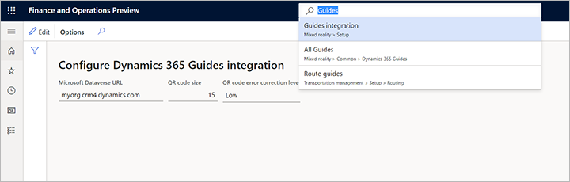
Stellen Sie die folgenden Felder ein:
- Microsoft Dataverse URL - Geben Sie die URL für die Microsoft Dataverse Umgebung an, in der Sie Ihre Guides erstellen. Das Format ist „contoso.crm4.dynamics.com“, wobei der erste Teil der URL typischerweise nach Ihrer Organisation benannt ist (z. B. „contoso.“), der zweite Teil ist spezifisch für die Datenregion Ihrer Umgebung (z. B. „crm4.“) und der letzte Teil ist die Domäne (z. B. „dynamics.com“). Eine Möglichkeit, die richtige URL zu finden, ist, zu home.dynamics.com zu gehen und dann Ihre App Guides zu öffnen. Wenn Guides geöffnet wird, sehen Sie die URL in der Adressleiste Ihres Browsers (nehmen Sie nur die Basis-URL, die dem vorherigen Beispiel ähneln sollte). Dieser Wert wird verwendet, um Adressen für Ihre Anleitungen zusammenzustellen und wird in die QR-Codes kodiert.“
- QR-Code-Größe – Stellen Sie die Größe des gerenderten QR-Codes ein. Wir empfehlen, eine Größe zu wählen, die den größten Teil Ihres Bildschirms ausfüllt, jedoch nicht mehr. In der Regel ist 15 ist ein guter Wert.
- QR-Code-Fehlerkorrekturstufe – Stellen Sie die Granularität des QR-Codes ein. Eine höhere Granularität kann dazu beitragen, die Zuverlässigkeit des Codes zu erhöhen; Ihre QR-Code-Größe muss jedoch groß genug sein, um den Detaillierungsgrad zu unterstützen, der für die von Ihnen ausgewählte Korrekturstufe erforderlich ist.
Tip
- Das Rendern von QR-Codes, die für Ihr Display zu groß sind, dauert etwas länger und wird dann verkleinert, um sie an Ihr Display anzupassen. Diese bieten keinen Vorteil.
- Zu kleine QR-Codegrößen können die Fähigkeit von HoloLens zum richtigen Lesen des Codes in einigen Umgebungen verringern.
- Wir empfehlen, dass Sie die Einstellungen für jedes Gerät testen, für das QR-Codes für HoloLens-Benutzer angezeigt werden. Wählen Sie Einstellungen, die eine ausreichende Lesbarkeit in Ihrer Werkstattumgebung gewährleisten.
Verschaffen Sie sich einen Überblick über alle Aufgaben des Guides
Verwenden Sie die Seite Alle Guides, um eine Liste aller verfügbaren Guides in Ihrer Organisation sowie alle Zuordnungen zu Ihren Produktionsprozessen und Ressourcen zu sehen.. Zum Öffnen der Liste gehen Sie zu Mixed Reality > Guides > Alle Guides. Die Liste oben zeigt alle verfügbaren Guides. Sie können das Feld hier verwenden, um die Liste zu filtern. Die Liste unten zeigt alle Guide-Zuweisungen und bietet eine Symbolleiste für deren Verwaltung.
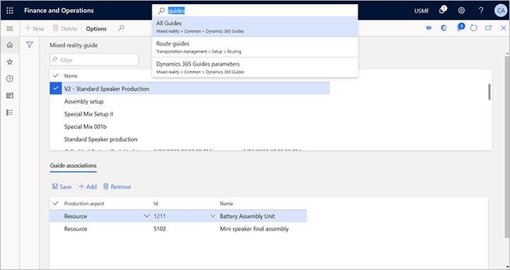
In den folgenden Abschnitten werden die Objekttypen beschrieben, denen Sie Guides zuweisen können. Jede zugewiesene Anleitung enthält Anweisungen, die automatisch den jeweiligen Produktionsaufträgen beigefügt werden und in der Werkstatt verfügbar sind.
Verknüpfen Sie einen Guide mit einer Ressource
Fügen Sie einen Guide einer Ressource hinzu, um den Guide im Zusammenhang mit relevanten Produktionsaufträgen anzubieten.
Typisches Szenario mit Ressourcen
Sie können beispielsweise einen Guide mit allgemeinen Anweisungen zur Maschinensicherheit oder zur Handhabung an eine Ressource vom Typ Maschine anhängen. Der Guide ist dann für jeden Auftrag verfügbar, der auf der Maschine ausgeführt wird.
Fügen Sie einen Guide zu einer Ressource hinzu
So fügen Sie einen Guide einer Ressource hinzu:
- Gehen Sie zu Produktionssteuerung > Setup > Ressourcen > Ressourcen.
- Wählen Sie im Listenbereich die Ressource aus, der Sie einen Guide zuweisen möchten.
- Erweitern Sie das Inforegister Zugehörige Guides.
- Wählen Sie Hinzufügen von der Symbolleiste Zugehörige Guides. Dem Raster wird eine neue Zeile hinzugefügt.
- Verwenden Sie für die neue Zeile die Dropdown-Liste in der Spalte Name, um den Guide auszuwählen, den Sie zuweisen möchten. Wenn Sie eine große Anzahl von Guides haben, können Sie die Liste filtern, um den gesuchten zu finden.
Verknüpfen Sie einen Guide mit einer Ressourcengruppe
Sie können einen Guide Ressourcengruppen hinzufügen, wenn Sie sie zum Verwalten von Gruppen von Maschinen, Produktionslinien oder Arbeitszellen verwenden.
Typisches Szenario mit Ressourcengruppen
Beispiel 1: Sie haben eine Ressourcengruppe für mehrere Maschinen desselben Modells definiert. Anstatt jeder relevanten Ressource die entsprechende Bedienungsanleitung für das Maschinenmodell zuzuweisen, können Sie den Guide auch der Ressourcengruppe zuweisen, die dieses Maschinenmodell widerspiegelt.
Beispiel 2: Sie haben eine Ressourcengruppe für eine Arbeitszelle definiert, die verschiedene Maschinen enthält, und Sie haben einen Guide, der allgemeine Anweisungen zum Verwalten der Arbeitszelle enthält. Der Guide gilt für alle Produktionsaktivitäten in dieser Arbeitszelle.
Einen Guide einer Ressourcengruppe hinzuzufügen
So fügen Sie einen Guide einer Ressourcengruppe hinzu:
- Gehen Sie zu Produktionssteuerung > Setup > Ressourcen > Ressourcengruppen.
- Wählen Sie im Listenbereich die Ressourcengruppe aus, der Sie einen Guide zuweisen möchten.
- Erweitern Sie das Inforegister Zugehörige Guides.
- Wählen Sie Hinzufügen von der Symbolleiste Zugehörige Guides. Dem Raster wird eine neue Zeile hinzugefügt.
- Verwenden Sie für die neue Zeile die Dropdown-Liste in der Spalte Name, um den Guide auszuwählen, den Sie zuweisen möchten. Wenn Sie eine große Anzahl von Guides haben, können Sie die Liste filtern, um den gesuchten zu finden. 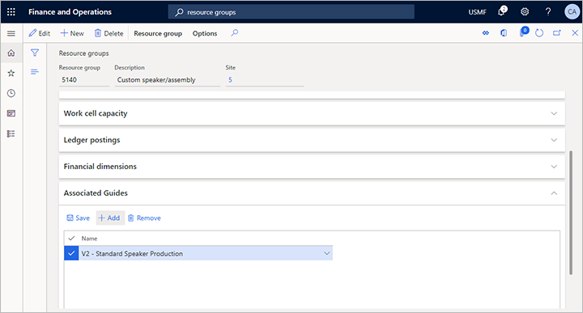
Verknüpfen eines Guide mit einem freigegebenen Produkt
Sie können einen Guide jedem freigegebenes Produkt hinzufügen.
Typisches Szenario mit freigegebenen Produkten
Guides auf Produktebene helfen den Mitarbeitern in der Werkstatt mit Anweisungen, die für den Betrieb oder die Handhabung eines bestimmten freigegebenen Produkts oder Artikels relevant sind.
Hinzufügen eines Guide zu einem freigegebenen Produkt
So fügen Sie einen Guide einem freigegebenen Produkt hinzu:
- Gehen Sie zu Produktinformationsverwaltung > Produkte > Freigegebene Produkte.
- Öffnen Sie das Produkt, dem Sie einen Guide zuweisen möchten.
- Öffnen Sie im Aktionsbereich die Registerkarte Entwickler und wählen Sie aus der Gruppe Anzeige Zugehörige Guides aus.
- Die Seite Zugehörige Guides wird für Ihr ausgewähltes Produkt geöffnet.
- Wählen Sie im Aktivitätsbereich Hinzufügen aus, um eine neue Position zum Raster hinzuzufügen.
- Verwenden Sie für die neue Zeile die Dropdown-Liste in der Spalte Name, um den Guide auszuwählen, den Sie zuweisen möchten. 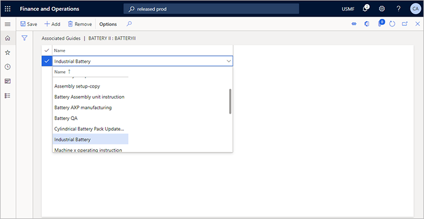
Verknüpfen eines Guides mit einer Formel
Sie können einen Guide jeder beliebigen Formel hinzufügen.
Typisches Szenario mit Formeln
Guides auf Formelebene bieten Werkstattmitarbeitern Anweisungen zur Handhabung im Zusammenhang mit einer Formel oder einem Rezept. Guides können auch Versionen einer Formel zugewiesen werden.
Note
Sie können einem Arbeitsplan, einer Arbeitsplanversion oder einer Arbeitsplanvorgangsbeziehung einen fertigungsrelevanten Leitfaden auf der Basis einer Formel zuordnen.
Guides können derzeit nicht an einzelne Formelpositionen angehängt werden.
Hinzufügen eines Guides zu einer Formel
So fügen Sie einen Guide einer Formel hinzu:
- Gehen Sie zu Produktinformationsverwaltung > Stücklisten und Formeln > Formeln.
- Öffnen Sie die Formel, der Sie einen Guide zuweisen möchten.
- Öffnen Sie die Registerkarte Überschrift über dem oberen Inforegister.
- Erweitern Sie das Inforegister Zugehörige Guides.
- Wählen Sie Hinzufügen von der Symbolleiste Zugehörige Guides. Dem Raster wird eine neue Zeile hinzugefügt.
- Verwenden Sie für die neue Zeile die Dropdown-Liste in der Spalte Name, um den Guide auszuwählen, den Sie zuweisen möchten. 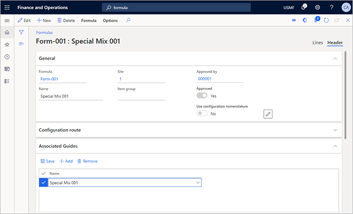
Verknüpfen eines Guides mit einer Formelversion
Sie können einen Guide jeder beliebigen Formelversion hinzufügen.
Typisches Szenario mit Formelversionen
An einer einzelnen Version einer Formel angehängte Guides geben den Mitarbeitern in der Werkstatt Anweisungen, die sie durch die Erstellung dieser Version des Formelrezepts führen.
Tip
Sie können einem Arbeitsplan, einer Arbeitsplanversion oder einer Arbeitsplanvorgangsbeziehung einen fertigungsrelevanten Leitfaden auf der Basis dieser Formelversion zuordnen.
Note
Guides können derzeit nicht an einzelne Formelpositionen angehängt werden.
Hinzufügen eines Guides zu einer Formelversion
So fügen Sie einen Guide einer Formelversion hinzu:
- Gehen Sie zu Produktinformationsverwaltung > Stücklisten und Formeln > Formeln.
- Öffnen Sie die Formel, die eine Version enthält, der Sie einen Guide zuweisen möchten.
- Öffnen Sie die Registerkarte Überschrift über dem oberen Inforegister.
- Auf dem Inforegister Formelversionen wählen Sie die Version aus, der Sie einen Guide zuweisen möchten.
- Auf der Symbolleiste Formelversionen wählen Sie Zugehörige Guides aus. 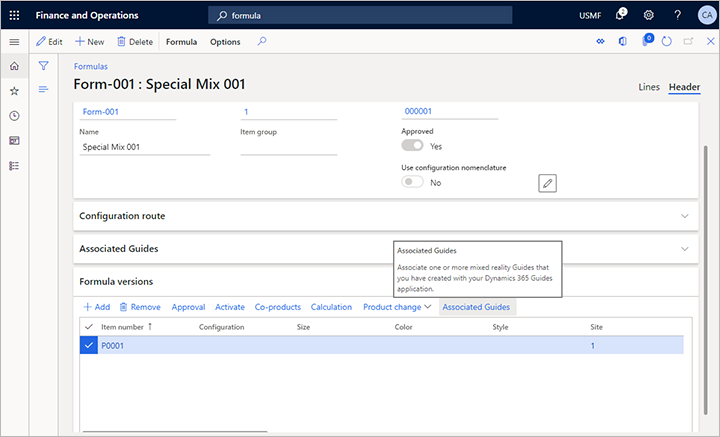
- Die Seite Zugehörige Guides wird für Ihre Formelversion geöffnet.
- Wählen Sie im Aktivitätsbereich Hinzufügen aus, um eine neue Position zum Raster hinzuzufügen.
- Verwenden Sie für die neue Zeile die Dropdown-Liste in der Spalte Name, um den Guide auszuwählen, den Sie zuweisen möchten. 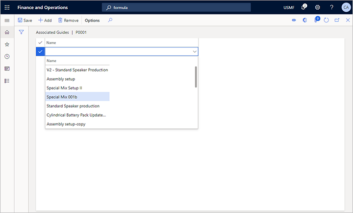
Verknüpfen eines Guides mit einer Stückliste
Sie können eine Anleitung jeder beliebigen Stückliste (BOM) hinzufügen.
Typisches Szenario mit Stücklisten
An eine Stückliste angehängte Guides geben den Mitarbeitern in der Werkstatt Anweisungen, wie das Material aus einer Stückliste vorbereitet und gehandhabt wird. Guides können auch Versionen einer Stückliste zugewiesen werden.
Note
Guides können derzeit nicht an einzelne Stücklistenpositionen angehängt werden.
Hinzufügen eines Guides zu einer Stückliste
So fügen Sie einen Guide einer Stückliste hinzu:
- Gehen Sie zu Produktinformationsverwaltung > Stücklisten und Formeln > Stücklisten.
- Öffnen Sie die Stückliste, der Sie einen Guide zuweisen möchten.
- Öffnen Sie die Registerkarte Überschrift über dem oberen Inforegister.
- Erweitern Sie das Inforegister Zugehörige Guides.
- Wählen Sie Hinzufügen von der Symbolleiste Zugehörige Guides. Dem Raster wird eine neue Zeile hinzugefügt.
- Verwenden Sie für die neue Zeile die Dropdown-Liste in der Spalte Name, um den Guide auszuwählen, den Sie zuweisen möchten. 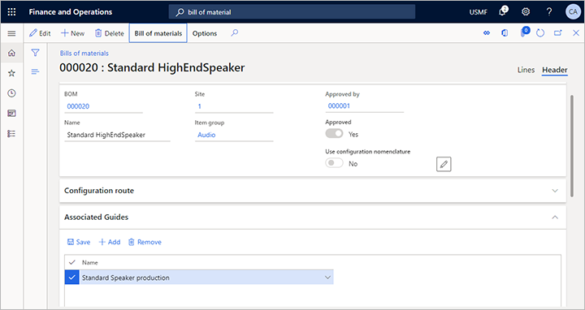
Verknüpfen eines Guides mit einer Stücklistenversion
Sie können eine Anleitung jeder beliebigen Stücklistenversion hinzufügen.
Typisches Szenario mit Stücklistenversionen
An einer einzelnen Stücklistenversion angehängte Guides enthalten Fertigungsanweisungen, in denen erläutert wird, wie Material für eine Version einer Stückliste vorbereitet und gehandhabt wird, die sich von der generischen Stückliste oder anderen Versionen davon unterscheidet.
Note
Guides können derzeit nicht an einzelne Stücklistenpositionen angehängt werden.
Hinzufügen eines Guides zu einer Stücklistenversion
So fügen Sie einen Guide einer Stücklistenversion hinzu:
- Gehen Sie zu Produktinformationsverwaltung > Stücklisten und Formeln > Stücklisten.
- Öffnen Sie die Stückliste, die eine Version enthält, der Sie einen Guide zuweisen möchten.
- Öffnen Sie die Registerkarte Überschrift über dem oberen Inforegister.
- Auf dem Inforegister Stücklistenversionen wählen Sie die Version aus, der Sie einen Guide zuweisen möchten.
- Auf der Symbolleiste Stücklistenversionen wählen Sie Zugehörige Guides aus. 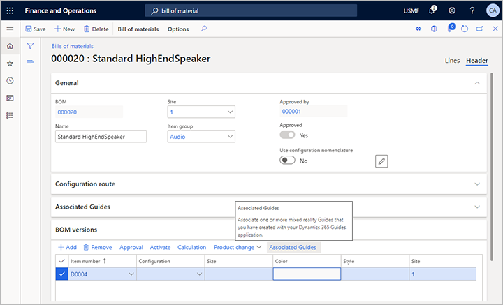
- Die Seite Zugehörige Guides wird für Ihre Stücklistenversion geöffnet.
- Wählen Sie im Aktivitätsbereich Hinzufügen aus, um eine neue Position zum Raster hinzuzufügen.
- Verwenden Sie für die neue Zeile die Dropdown-Liste in der Spalte Name, um den Guide auszuwählen, den Sie zuweisen möchten. 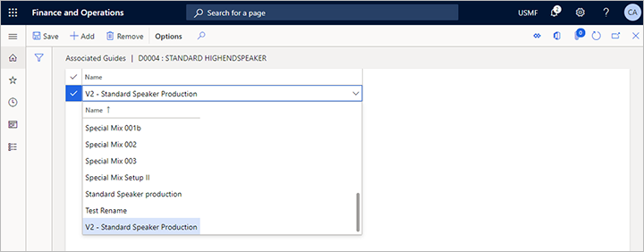
Verknüpfen eines Guides mit einem Arbeitsplan
Sie können einen Guide jedem beliebigen Arbeitsplan hinzufügen.
Typisches Szenario mit Arbeitsplänen
Arbeitspläne werden normalerweise verwendet, um anzugeben, wie ein bestimmtes freigegebenes Produkt basierend auf einer Stückliste oder Stücklistenversion und mit einer Reihe von Ressourcen oder Ressourcengruppen hergestellt werden soll.
Weisen Sie einem Arbeitsplan einen Leitfaden zu, um schrittweise Anweisungen für den jeweiligen Produktionsprozess bereitzustellen.
Hinzufügen eines Guides zu einem Arbeitsplan
So fügen Sie einen Guide einem Arbeitsplan hinzu:
- Gehen Sie zu Produktionskontrolle > Alle Arbeitspläne.
- Öffnen Sie den Arbeitsplan, dem Sie einen Guide zuweisen möchten.
- Erweitern Sie das Inforegister Zugehörige Guides.
- Wählen Sie Hinzufügen von der Symbolleiste Zugehörige Guides. Dem Raster wird eine neue Zeile hinzugefügt.
- Verwenden Sie für die neue Zeile die Dropdown-Liste in der Spalte Name, um den Guide auszuwählen, den Sie zuweisen möchten. 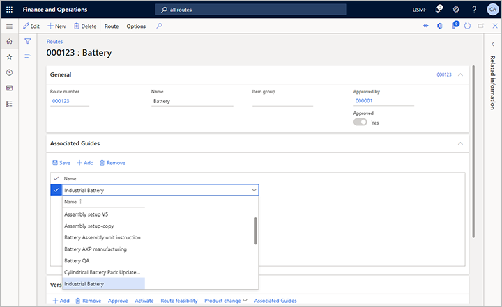
Verknüpfen eines Guides mit einer Arbeitsplanversion
Sie können einen Guide jeder beliebigen Arbeitsplanversion hinzufügen.
Typisches Szenario mit Arbeitsplanversionen
Arbeitsplanversionen werden normalerweise verwendet, um Varianten von Produktionsprozessen basierend auf einem vorhandenen Arbeitsplan anzugeben. Sie können jeder Arbeitsplanversion unterschiedliche Guides zuweisen.
Hinzufügen eines Guides zu einer Arbeitsplanversion
So fügen Sie einen Guide einer Arbeitsplanversion hinzu:
- Gehen Sie zu Produktionskontrolle > Alle Arbeitspläne.
- Öffnen Sie den Arbeitsplan, dem Sie einen Guide zuweisen möchten.
- Auf dem Inforegister Versionen wählen Sie die Version aus, der Sie einen Guide zuweisen möchten.
- Auf der Symbolleiste Versionen wählen Sie Zugehörige Guides aus. 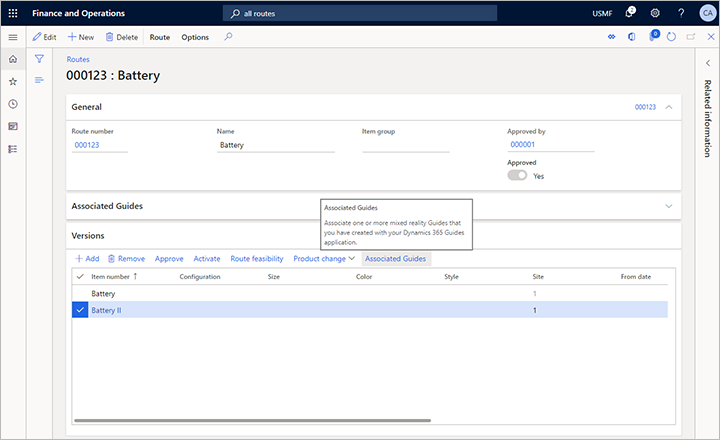
- Die Seite Zugehörige Guides wird für Ihre Stücklistenversion geöffnet.
- Wählen Sie im Aktivitätsbereich Hinzufügen aus, um eine neue Position zum Raster hinzuzufügen.
- Verwenden Sie für die neue Zeile die Dropdown-Liste in der Spalte Name, um den Guide auszuwählen, den Sie zuweisen möchten. 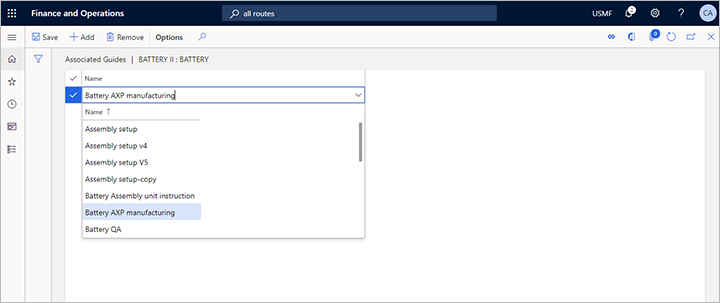
Verknüpfen eines Guides mit einer Arbeitsplanvorgangsbeziehung
Sie können einen Guide jeder beliebigen Arbeitsplanvorgangsbeziehung hinzufügen.
Typisches Szenario mit Arbeitsplanvorgangsbeziehung
Vorgangsbeziehungen sind die spezifischste Methode, um einem Produktprozess und den damit verbundenen Vorgängen eine Anleitung hinzuzufügen. Sie können Anleitungen für jeden Vorgang in einem Arbeitsplan und unterschiedliche Anleitungen für jede Art von Beziehungskontext angeben, die für einen Arbeitsplan angegeben sind, z. B. für bestimmte Elemente, Konfigurationen und mehr. Sie können auch angeben, für welche Phasen des Vorgangs die Anleitung gilt (z. B. Einrichtung, Warteschlange, Prozess oder Transport).
Note
Wenn Sie spezifische Guides für mehrere Vorgangsbeziehungen eines Arbeitsplans angeben, wird unter diesen Guides nur die Anleitung aus der spezifischsten Beziehung in der Werkstatt für den generierten Einzelvorgang angezeigt.
Hinzufügen eines Guides zu einer Arbeitsplanvorgangsbeziehung
So fügen Sie einen Guide zu einer Arbeitsplanvorgangsbeziehung hinzu:
- Gehen Sie zu Produktionskontrolle > Alle Arbeitspläne.
- Öffnen Sie den Arbeitsplan, dem Sie einen Guide zuweisen möchten.
- Öffnen Sie im Aktionsbereich die Registerkarte Arbeitsplan und wählen Sie aus der Gruppe Verwalten Arbeitsplandetails aus.
- Die Seite Arbeitsplandetails wird für Ihren ausgewählten Arbeitsplan geöffnet.
- Wählen Sie im oberen Raster den Vorgang aus, für den Sie eine Anleitung bereitstellen möchten.
- Wählen Sie im unteren Raster eine bestimmte Beziehung (oder die generische Beziehung Alle) aus. 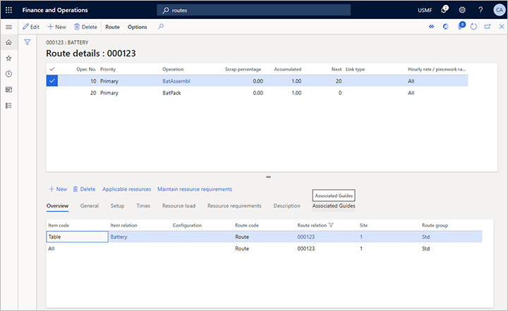
- Öffnen Sie über dem unteren Raster die Registerkarte Zugehörige Guides aus. 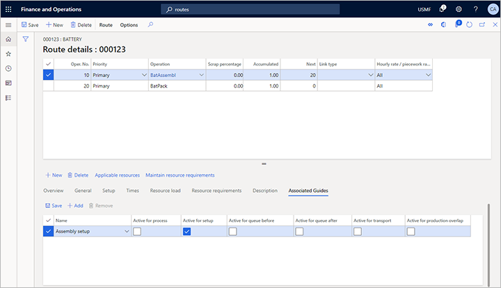
- Wählen Sie Hinzufügen in der Symbolleiste oben im unteren Raster aus, um dem Raster eine neue Position hinzuzufügen.
- Verwenden Sie für die neue Zeile die Dropdown-Liste in der Spalte Name, um den Guide auszuwählen, den Sie zuweisen möchten. Aktivieren Sie im Rest der Zeile das Kontrollkästchen für jeden Kontext, in dem der ausgewählte Guide verfügbar sein soll.
Note
Sie können für jede Phase jedes Vorgangs eine oder mehrere Guides hinzufügen.
Wählen Sie Guides aus der Fertigungsausführungsoberfläche aus
Wenn ein Mitarbeiter eine Einzelvorgangsliste auf der Fertigungsausführungsoberfläche öffnet, findet Supply Chain Management die relevanten Guides für die angezeigten Einzelvorgänge. Verwenden Sie die Anleitungen-Schaltfläche, um die entsprechenden Anleitungen anzuzeigen.
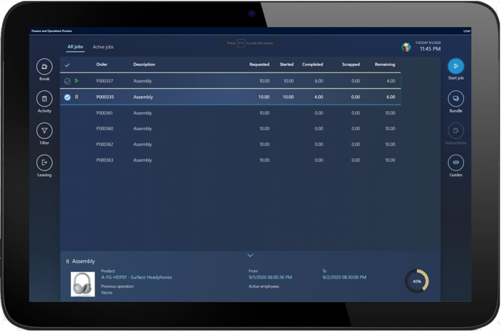
Ziehen Sie dann eine HoloLens an und greifen Sie auf die jeweilige Anleitung zu, indem Sie einen Blick auf den QR-Code werfen und den entsprechenden Guide aktivieren.
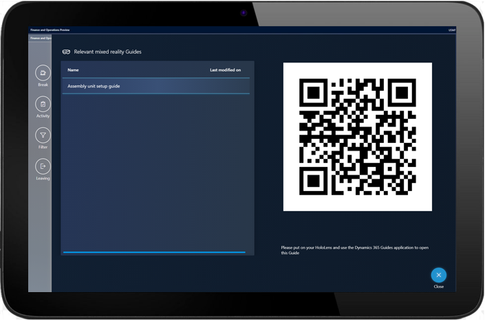
Auflösen der Logik zur Auswahl von Guides
Sie können den folgenden Produktionsdaten Guides hinzufügen:
- Ressourcen
- Ressourcengruppen
- Freigegebene Produkte
- Formeln
- Formelversionen
- Stücklisten
- Stücklistenversionen
- Arbeitspläne
- Arbeitsplanversionen
- Arbeitsplanbetriebsbeziehungen
Wenn das Supply Chain Management die Einzelvorgänge für die Produktion generiert, werden die entsprechenden Guides aus diesen Quellen gesammelt. Beachten Sie die folgenden wichtigen Regeln.
- Wenn Sie eine Stücklisten- oder Formelversion an einen Arbeitsplan oder einen Fertigungsauftrag anhängen, werden alle an diese Version angehängten Guides und auch die an die übergeordnete Stückliste oder Formel dieser Version angehängten Guides im Einzelvorgang angezeigt.
- Wenn Sie eine Arbeitsplanversion an einen Produktionsauftrag anhängen, werden alle an diese Version angehängten Guides und auch die Guides, die an den übergeordneten Arbeitsplan dieser Version angehängt sind, im Einzelvorgang angezeigt.
- Wenn Sie mehrere Arbeitsplanvorgangsbeziehungen definieren, die die Beziehung Alle enthalten, und ihnen Guides zuordnen, werden nur die Guides aus der spezifischsten Beziehung für den Einzelvorgang angezeigt.
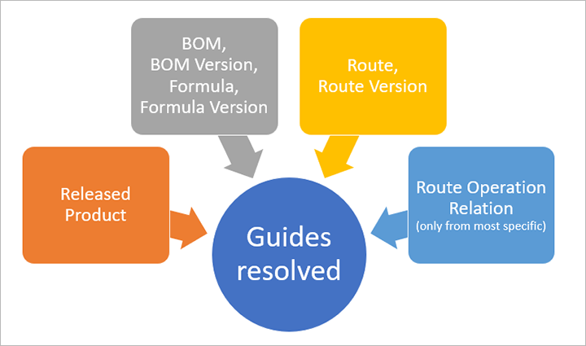